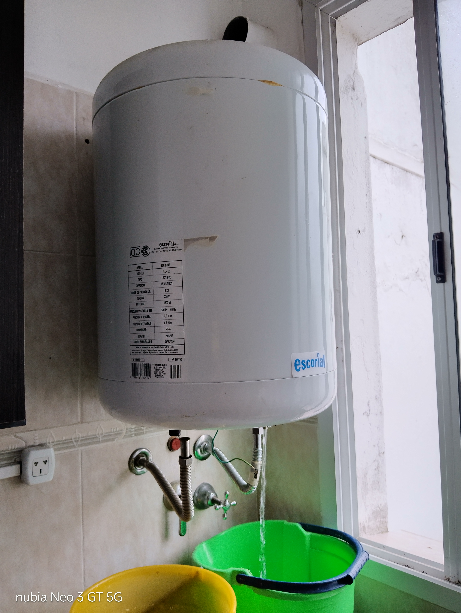

Mantenimiento preventivo, diagnóstico y reparación de termotanques eléctricos y a gas a domicilio en todo Mar del Plata.
Coordinamos un horario para inspeccionar el termotanque en tu hogar (problemas de calentamiento, pérdidas de agua o fallas de encendido).
Evaluamos el estado de los componentes (resistencias, termostatos, ánodos de magnesio, pilotos o válvulas) y te damos el costo exacto de mano de obra y repuestos.
En la mayoría de los casos, realizamos la sustitución de repuestos o mantenimiento preventivo en el momento sin retirar el equipo.
Todos nuestros trabajos en termotanques cuentan con 3 meses (90 días) de garantía en mano de obra y repuestos sustituidos.
💳 Formas de pago: Efectivo o transferencia bancaria al finalizar el trabajo.
Atendemos todas las marcas del mercado nacional e importado en Mar del Plata:
Coordiná tu visita técnica por WhatsApp hoy mismo.
Trabajo de reparación de termotanque en Mar del Plata:
